Ejercicios de áreas de funciones
Resolver
1Calcular el área del recinto limitado por la curva y = 4x − x2 y el eje OX.
2Hallar el área de la región del plano encerrada por la curva y = ln x entre el punto de corte con el eje OX y el punto de abscisa x = e.
3Hallar el área limitada por la recta x + y = 10, el eje OX y las ordenadas de x = 2 y x = 8.
4Calcular el área limitada por la curva y = 6x2 − 3x3 y el eje de abscisas.
5Calcular el área de las regiones del plano limitada por la curva f(x) = x3 − 6x2 + 8x y el eje OX.
6Calcular el área del círculo de radio r.
7Hallar el área de una elipse de semiejes a y b.
8Calcular el área limitada por la curva y = x2 -5x + 6 y la recta y = 2x.
9Calcular el área limitada por la parábola y2 = 4x y la recta y = x.
10Calcular el área limitada por las gráficas de las funciones 3y =x2 e y = −x2 + 4x.
11Calcula el área de la figura plana limitada por las parábolas y= x2 − 2x, y = −x2 + 4x.
12Hallar el área de de la región limitada por las funciones:
y = sen x, y = cos x, x = 0.
- 1
- 2
- 3
- 4
- 5
- 6
- 7
- 8
- 9
- 10
- 11
- 12
Ejercicio 1 resuelto
Calcular el área del recinto limitado por la curva y = 4x − x2 y el eje OX.
En primer lugar hallamos los puntos de corte con el eje OX para representar la curva y conocer los límites de integración.
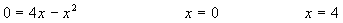
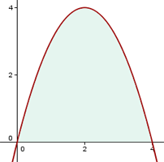
En segudo lugar se calcula la integral:
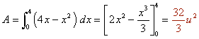
Ejercicio 2 resuelto
Hallar el área de la región del plano encerrada por la curva y = ln x entre el punto de corte con el eje OX y el punto de abscisa x = e.
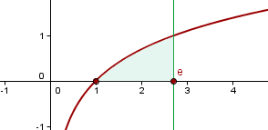
En primer lugar calculamos el punto de corte con el eje de abscisas.
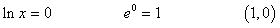
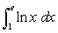
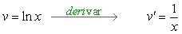
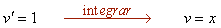
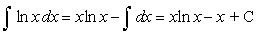
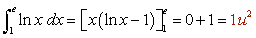
Ejercicio 3 resuelto
Hallar el área limitada por la recta x + y = 10, el eje OX y las ordenadas de x = 2 y x = 8.
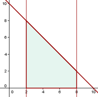
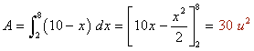
Ejercicio 4 resuelto
Calcular el área limitada por la curva y = 6x2 − 3x3 y el eje de abscisas.

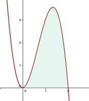
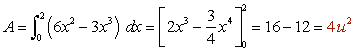
Ejercicio 5 resuelto
1. Calcular el área de las regiones del plano limitada por la curva f(x) = x3 − 6x2 + 8x y el eje OX.
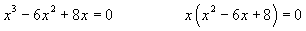
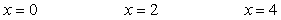
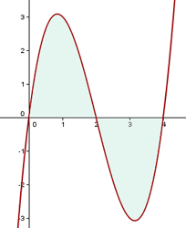
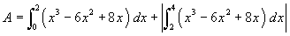
El área, por razones de simetría, se puede escribir:
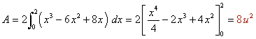
Ejercicio 6 resuelto
2. Calcular el área del círculo de radio r.
Partimos de la ecuación de la circunferencia x² + y² = r².
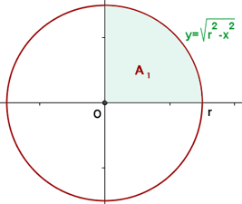
El área del círculo es cuatro veces el área del primer cuadrante.
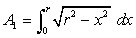
Calculamos la integral indefinida por cambio de variable.
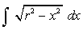
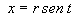
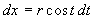
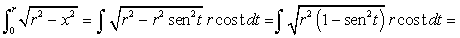
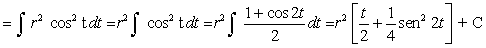
Hallamos los nuevos límites de integración.
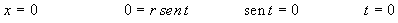
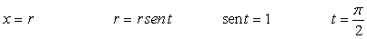
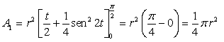
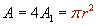
Ejercicio 7 resuelto
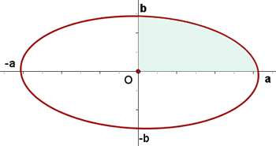
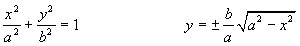
Por ser la elipse una curva simétrica, el área pedida será 4 veces el área encerrada en el primer cuadrante y los ejes de coordenadas.
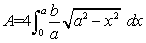
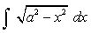
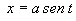
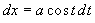
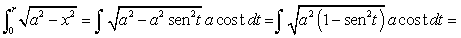
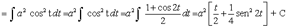
Hallamos los nuevos límites de integración.
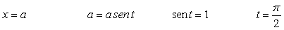
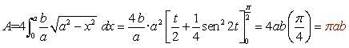
Ejercicio 8 resuelto
Calcular el área limitada por la curva y = x2 -5x + 6 y la recta y = 2x.
En primer lugar hallamos los puntos de corte de las dos funciones para conocer los límites de integración.
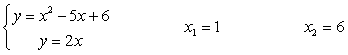
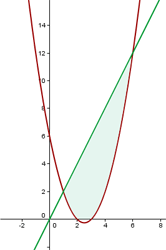
De x = 1 a x = 6, la recta queda por encima de la parábola.

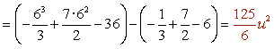
Ejercicio 9 resuelto
Calcular el área limitada por la parábola y2 = 4x y la recta y = x.
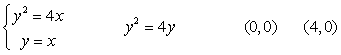
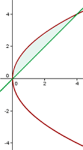
De x = 0 a x = 4, la parábola queda por encima de la recta.
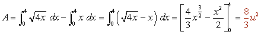
Ejercicio 10 resuelto
Calcular el área limitada por las gráficas de las funciones 3y = x2 e y = −x2 + 4x.
En primer lugar representamos las parábolas a partir del vértice y los puntos de corte con los ejes.
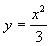
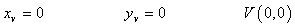
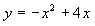
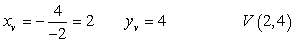
Hallamos también los puntos de corte de las funciones, que nos darán los límites de integración.
Ejercicio 11 resuelto
Calcula el área de la figura plana limitada por las parábolas y= x2 − 2x, y = −x2 + 4x.
Representamos las parábolas a partir del vértice y los puntos de corte con los ejes.
Ejercicio 12 resuelto
5.Hallar el área de de la región limitada por las funciones:
y = sen x, y = cos x, x = 0.
En primer lugar hallamos el punto de intersección de las funciones:
La gráfica del coseno queda por encima de la gráfica del seno en el intervalo de integración.
 Ejercicios
Ejercicios